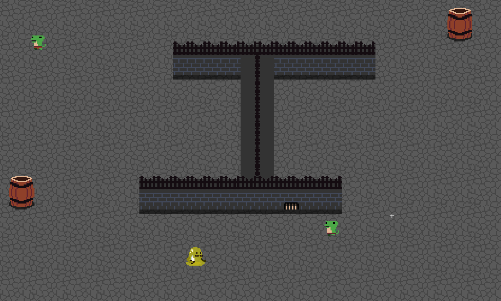
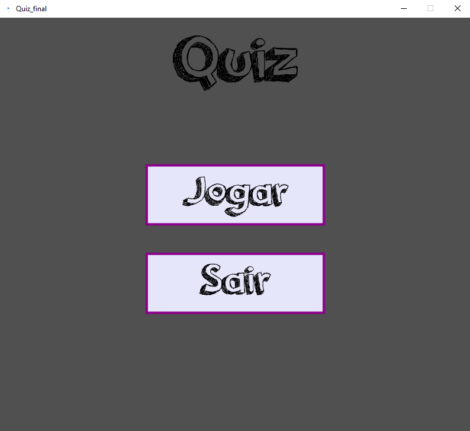
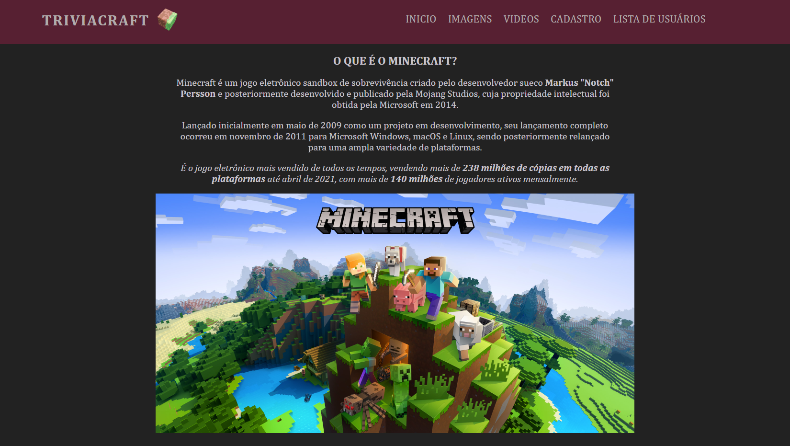
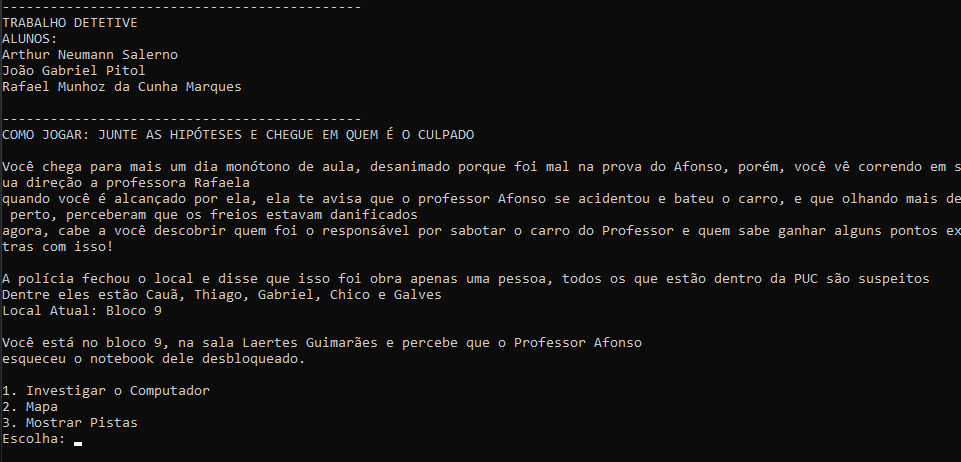
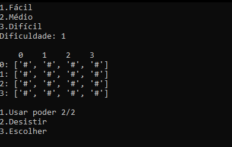

Olá, bem vindo ao meu Portfólio
Meu nome é Arthur Neumann Salerno e eu estou estudando Bacharelado em Ciência da Computação na Pontifícia Universidade Católica do Paraná.
Castelo Melequento - Experiência Criativa

Esse é o jogo Castelo Melequento, desenvolvido durante as aulas de Experiência Criativa no GameMaker Studio 2, o objetivo é a vingança do personagem principal contra um mago poderoso que o transformou em uma gosma (Slime)
Quiz - Experiência Criativa

Esse é o Quiz, um jogo de perguntas desenvolvido durante as aulas de Experiência Criativa utilizando a ferramenta Proccessing, onde nós aprendemos a trabalhar com java utilizando imagens, sons, animações, interação com usuário e videos.
Site - Experiência Criativa

Este é o TriviaCraft, um site desenvolvido nas aulas de Experiência Criativa que mostra um pouco sobre o jogo Minecraft, esse trabalho foi importante para desenvolver habilidades com HTML, CSS, JavaScript, PHP e MySQL.
Detetive - Resolução de Problemas com Lógica Matemática

Este é o jogo Detetive desenvolvido em Python, a ideia por trás do jogo é de investigação para encontrar um culpado pelo crime cometido contra um professor.
Jogo da Memória - Raciocínio Algorítmico

Esse é um jogo da memória desenvolvido em Python, com ele, aprendemos o uso de laços de repetição, matrizes e funções, o jogo conta com um poder que revela momentaneamente as cartas.